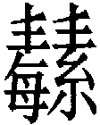
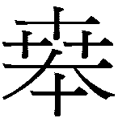

22 賁卦 山火賁
賁亨，小利有攸往。初九，賁其趾，舍車而徒。六二，賁其須。九三，賁如濡如，永貞吉。六四，賁如皤如，白馬翰如，匪寇婚媾。六五，賁于丘園，束帛戔戔。吝，終吉。上九，白賁，无咎。
【卦名】
今本：賁 帛書：蘩 清華簡： 海昏：賁
賁音「必」或「墳」，為黑白相雜的紋飾，引申為裝飾。
《說文》：「賁，飾也。從貝卉聲。」段注：「彼義切，十五部。按：亦音墳，亦音肥。」鄭玄：「賁，變也，文飾之貌。」
賁的字源有兩種可能，一是甲骨文的，下方原本是一面鼓，上為大鼓的裝飾，以強調這是大鼓，小篆開始將下方的鼓寫成貝，演變為裝飾的意思。即鼖，音墳，與賁相通，為大型的軍鼓，即《周禮》「以鼖鼓鼓軍事」，「鼖鼓」亦作「賁鼓」。鄭注：「大鼓謂之鼖，鼓長八尺。」由此衍生而出的意思為大、勇，因此賁亦有大的意思。《周禮》「虎賁氏」的賁音「奔」，即勇士。
于省吾則認為賁金文作，通班，形容文飾的樣子，即今之斑。《釋文》：「傅氏曰：賁古班字，文章貌。」王肅：「賁有文飾，黃白色。」鄭玄：「賁，變也，文飾之貌。」
高亨則認為，古人貫貝而繫於頸以為美飾，貝的色相不一，有素貝、紫貝、文貝…「取諸色貝以為頸飾，是為賁。故賁從貝而為雜色文飾之義。」
《詩‧桃夭》：「桃之夭夭，有蕡其實。」賁小篆上有三個屮，蕡上有五個屮，竊疑兩字古文原為同一字。《傳》解蕡為「實貌」，結實的樣子。〈桃夭〉講的是女子于歸之事，與賁卦所談內容亦相通。
賁古文與奔互通，帛書易傳「渙奔其机」作「渙賁其階」。
《雜卦傳》「賁，無色也」比較難以理解，或許指的就是賁卦上九「白賁」，以白色為飾。另一可能，色為指黑白兩色之外的彩色，因賁為黑白之紋飾，或者純粹指的是花紋、紋飾，如人身上之刺青，或者是古代器物上的條紋紋飾，因此說「無色」。
《爾雅．釋魚》則曰：「龜三足，賁。」這與賁卦卦義似無關聯。
帛書卦名做蘩，音近賁（墳）。清華簡作，與蘩字應為異體字，兩字構造下方分別有「每糸」，字上從雙丰，蘩字上從艸，皆有繁茂之意。《詩》有〈采蘩〉，蘩是一種長在水邊的草，又稱白蒿。《毛詩》序：「采蘩，夫人不失職也．夫人可以奉祭祀，則不失職矣。」總而言之，蘩與可能是音近而假借為賁。
【卦義】
紋飾，裝飾，文明。
賁卦經文講的原是婚嫁之事，但也有比喻隱士待訪的意味。卦象內離明，外艮止。內離明為君子藏其聰明，外艮止則是有所不為，《彖傳》說：「文明以止，人文也。」艮在外亦有藏養之義，為養聰明於山內，隱士之象。離日在艮山下，為太陽下山，昏（婚）之象。《禮記．昏義》：「婚禮用昏，故經典多止作昏字。」古代婚禮昏時為之，因此稱「昏」。
孔子說：「質勝文則野，文勝質則史，文質彬彬，然後君子。」文飾不足流於野蠻，若過於文飾以致於勝過本質，那麼會像史官一樣油滑而世故，因此文飾應該適度就好，要能與質相得益彰為宜。
卦序上賁卦緊接噬嗑之後而來，《序卦》：「物不可以苟合而已，故受之以賁，賁者飾也。」賁卦與噬嗑卦講的是為政的兩個不同面向：噬嗑是以刑罰懲奸除惡，賁卦則是軟性的措施，講的是文化。噬嗑卦「利用獄」，是因為能動而明，積極而睿智。賁卦「君子以明庶政，無敢折獄」，是養文明以減少刑罰。
就吉凶的論斷上，賁卦小事可，大事不行。小事可亨通，但僅止於小利，沒有大利。私事為小吉，公務則為不亨通。問感情、婚姻可成，但過程會有些疑慮和小磨擦。若是求事或功名，則不可成，有隱居、退隱山林之象。
《呂氏春秋．卷二十二慎行論壹行》：「孔子卜，得賁。孔子曰：『不吉。』子貢曰： 『 夫賁亦好矣，何謂不吉乎？』孔子曰：『夫白而白，黑而黑，夫賁又何好乎？』」孔子意思為，白就是白，黑就是黑，顏色相雜（賁為文飾，又有文彩相雜的意思）而讓人分不清，好在那裡？由此推想孔子當初所問可能為一些國家大事，或者是出士之事，非私人的小事。
賁亨，小利有攸往。
- 彖曰：賁亨。柔來而文剛，故亨。分剛上而文柔，故小利有攸往，天文也。文明以止，人文也。觀乎天文，以察時變，觀乎人文，以化成天下。
- 象曰：山下有火，賁。君子以明庶政，无敢折獄。
- 序卦傳：物不可以苟合而已，故受之以賁，賁者飾也。至飾然後亨則盡矣，故受之以剝。
- 雜卦傳：賁，无色也。
【今解】
文飾而能亨通，若是小事，利於有所往。反之，大事則不吉。
陰為小，賁卦六爻中陰爻才得以利於有所往，即六四的「白馬翰如，匪寇婚媾」。陽爻則不宜於動。此初九之舍車而徒，九三之永貞吉（貞為定），上九之白賁無咎。
傳說孔子曾筮問得賁卦，並斷為「不吉」：「夫白而白，黑而黑，夫賁又何好乎？」孔子所問應為大事，故曰不吉。另也暗指賁卦有「黑白不分」之疑。
彖「柔來而文剛」指六二，「來」為由外到內，言六二之柔從外至內以美化初九與九三兩個剛爻，故亨。「分剛上而文柔」指上九，從乾體分出由內至外，到上面文飾了六四和六五兩個柔爻，故小利有攸往。《彖》傳此說認為賁卦是從泰卦而來，泰卦上六至二為文剛，九二至上位以文柔。
程頤：物有飾而後能亨，故曰无本不立，无文不行，有實而加飾，則可以亨矣。文飾之道，可增其光彩，故能小利於進也。
陳夢雷：賁雖尚文，必以質為本。凡事无本不立，无文不行，故全彖以賁有可亨之道。然本大而文小，故不過小利于所往。
亨小利有攸往：依《彖傳》應讀為「亨，小利有攸往」。小利有攸往，謂小事則利有所往，利有遠往。反之，則大事不宜。但俞樾認為應讀作「賁，亨小，利有攸往」。周易六十四卦有｢亨小利」三字相連的只有三卦，遯亨小利貞，賁亨小利有攸往，既濟亨小利貞，另有未濟卦「亨小狐汔濟」。這幾卦都可讀成「亨小，利...」或「亨，小利....」或「亨，小狐汔濟」。《周易》另有「小亨」者，如旅和巽。依《彖傳》，這幾卦分別讀作「遯亨，小利貞」，「賁亨，小利有攸往」，既濟不明，未濟為「既濟亨，小狐汔濟」。因此《彖傳》並不採用「亨小」的句型，但有「小亨」。小字都與後文連讀。但宋儒郭京認為「小」為「不」之誤，俞琰從之：「賁既亨矣，而又加進，則文滅質矣，豈宜往哉。內文明而外止，文明故亨，止則不可動，故不利有攸往。」
明庶政，无敢折獄：折獄，斷獄。鄭玄：「折，斷也。」通解認為庶政屬事之小者，折獄屬事之大者。朱熹：「明庶政，事之小者。折獄，事之大者。」《象傳》以離為獄象，獄為相對於訟之獄，即裁判人知之罪刑。豐卦說「折獄致刑」，噬嗑經文說「利用獄」，象傳則說「明罰勑法」。中孚大象像離，《象傳》說「君子以議獄緩死」。離與艮象相配時，旅卦《象傳》說「君子以明慎用刑而不留獄」，賁卦說「無敢折獄」。這些都是以離為執法用獄之象的證據。
初九，賁其趾，舍車而徒。
象曰：舍車而徒，義弗乘也。
文飾在腳，捨棄乘車，選擇步行。
此言君子有所不為，縱使有車可乘，也因為義理上不應坐車，而情願步行。初為趾，也代表行為、行動的開始。引申為一開始就有所不為，隱喻君子慎於始。原本有車可乘是個榮寵，理當接受。但是自覺於道義上不當接受，所以文飾其行為，選擇步行而不乘車。
朱震：古之人有弗肯乘人之車，緩步以當車者，守義故也。
【字義】
賁其趾：文飾其腳、文飾其腳趾。賁，裝飾，文飾。趾，腳，或腳趾。易象六位以初為趾，象徵一開始的行動，或是行動的開始。趾為腳指，亦通止，止古文與足通，腳的意思。賁為黑白紋飾，賁其趾或指在腳上紋身。舍，捨，捨棄。舍車，捨棄乘車，乘車是一種榮寵，此處象徵受到的榮譽或寵愛。徒，徒步、步行。高亨認為，「賁其趾」為在腳上畫上花紋，所以不肯乘車，怕人看不到腳上漂亮的花紋。「文其足，乘車則其文不見，舍車而赤足步行，則人皆見之矣。」
舍車而徒：舍，通捨，捨棄。車，或作輿，漢石經作轝。徒，徒步而行。舍車而徒，或指男方前往求婚，為表誠意而捨棄乘車。
六二，賁其須。
象曰：賁其須，與上興也。
【今解】
打扮其陪嫁女。
須比喻只是配角，只能當做是別人的裝飾。
就整個賁卦來看，各爻講的像是一個求婚或婚禮的過程，那麼「賁其須」講的可能是陪嫁之女，或指家中老者高興而整理鬍鬚準備參加婚禮。但無論須是陪嫁女或老者，都不是婚禮主角，只是在一旁高興熱鬧。另有一說認為，須指的是馬匹的鬃毛。
六二處下體離卦黃中之位，為附麗二陽之陰，承於九三，因此是為九三之附屬。
【字義】
賁其須：須有多種解釋：一是賤妾，歸妹六三「歸妹以須，反歸以娣」，帛本作「嬬」，賤妾之義。二是指鬍鬚，《說文》：「須，面毛也。」三是等待，需卦《彖傳》曰：「需，須也。」須假借為䇓，等待的意思。不論那一種解釋，意思都是指六二只是被動及配角的角色，象曰：「賁其須，與上興也。」「與上興」就是指六二是附屬於九三而動，因六二及九三都與外卦沒有相應，但兩者又都當位，六二承九三，為可輔九三，隨九三而得文明（下卦為離，為文明，離意思就是陰附麗於陽）。須通嬃。《說文》段玉裁注：「嬃女字也，樊噲以呂后女弟呂須爲婦。須卽嬃字也。《周易》歸妹以須鄭云：須，有才智之稱。天文有須女。按：鄭意須與諝胥同音通用，諝者有才智也。」「女嬃之嬋媛，屈原賦離騷篇文。賈侍中說：楚人謂姊爲嬃。賈語蓋釋楚辭之女嬃。王逸、袁山松、酈道元皆言女嬃、屈原之姊。惟鄭注周易屈原之妹名女須，詩正義所引如此，妹字恐姊字之譌。」
九三，賁如濡如，永貞吉。
象曰：永貞之吉，終莫之陵也。
【今解】
文飾相當盛大而美麗，應當免於耽溺，能夠永保貞定則吉。
包裝裝飾得極為漂亮，然而文勝質則史，不能過度追求外表的榮華，應更加堅守自己的內在美德，才能永保現在的成就。九三雖是多憂之位，但處下體離卦之頂，為六二所承載與文飾，所以是賁卦中裝飾最為隆盛者，故曰「賁如」。居互體坎中，故曰「濡如」。濡有耽溺之義，所以戒君子要以永貞才可得吉。朱熹：「不可溺於所安，故有永貞之戒。」
李光地認為，經文重言如者，都有兩邊無法確定之義。那麼賁如濡如當解釋為：文飾又擔心受到沾濡。濡有污辱之引喻。《周易折中》賁六四「賁如皤如」注：「案：易中凡重言如者，皆兩端不定之辭，故屯如邅如者，欲進而未徑進也。此三爻賁如濡如者，得陰自賁，又慮其見濡也。」
【字義】
賁如：九三是下體離明的最高點，到第四爻時則是艮止之初，也就是文飾必需停止而開始反樸歸真的時候，因九三為文飾（賁）的最高點，因此說「賁如」。
濡如：九三與上下兩陰成坎象，坎為水，所以說「濡如」，濡為滋潤、潤飾的意思，已是賁如了，還繼續潤飾，因此引申有錦上添花的意味。濡亦有耽溺之義，陳夢雷：「然坎體有濡象，亦有陷溺之象。九三非不貞也。能永其貞而不溺于所安，則二陰于我有潤澤之濡，而我无陷溺之悔矣，故吉。」
六四，賁如皤如，白馬翰如，匪寇婚媾。
象曰：六四當位，疑也；匪寇婚媾，終无尤也。
【今解】
要化妝打扮？還是樸素不打扮？讓人相當困擾。白馬飛奔而至，來者不是盜賊，而是來求婚者。
此言婚合過程中內心的困惑與疑慮。象曰：「六四當位，疑也。」六四為多疑懼的爻位，又當互體坎之上，坎為心病，為疑象。互體震之中，上體艮之下，於體欲動又為艮山所止，爻動而後互體又有巽，所以為進退不果。
【字義】
賁如皤如：內心在裝飾還是樸素之間掙扎。皤，音婆，白色，素色，樸素之意。《說文》：「皤，老人白也。从白番聲。易曰：賁如皤如。」段注：「老人之色白與少壯之白晳不同，故以次於晳。」「賁六四賁如皤如，引伸爲凡白素之偁也。」賁如為裝飾、文飾貌，而皤如則為白素、樸素，不裝飾之貌。王弼：「欲靜則失初之應，欲進則懼三之難，故或飾或素。內懷疑懼，鮮絜其馬，翰如以待。」屈萬里：「即班如盤如，不進之皃。四亦為進退，故云。」
翰如：翰原本為赤羽天雞，引申則有多義。《說文》：「翰，天雞赤羽也。从羽，倝聲。」《爾雅．釋鳥》：「鶾，天雞。」鶾通翰。引申有三種解釋。一、長毛馬為翰。高亨：「翰借為鶾或㲦，…長毛曰㲦，長毛之馬曰鶾，乃一音一義之轉。此云翰如，則馬毛長之貌也。」二、白馬，讀作寒。俞琰：「髮白為皤，馬白為翰。《禮記》云：商人尚白，戎事乘翰。翰，平聲。鄭氏注云：翰，馬白色也。」王弼則以翰為乾淨亮麗的意思，而解釋作「鮮絜其馬，翰如以待」，文義像是從「白」引申而來。三、疾馳狀。翰引申有鳥高飛的意思，以鳥高飛形容馬奔馳如飛狀。如《詩．小宛》： 「宛彼鳴鳩，翰飛戾天。」《詩．常武》：「王旅嘽嘽，如飛如翰。」朱熹：「其往求之心，如飛翰之疾也。」程頤：「其從正應之志如飛，故云翰如。」來知德：「翰如者，馬如翰之飛也。」
匪寇婚媾：有三種解釋。一、若不是盜賊來犯，就已順利完成婚媾。匪，非，否定的意思。或作「若非」，「要不是……」。如王弼曰：「寇謂初也。无初之難，則與五婚矣，故曰匪寇婚媾也。」程頤：「設匪逼于寇難，則往求子婚媾矣。婚媾，正應也。寇，非理而至者。」二、讀作「匪寇，婚媾」，意思為來者不是賊寇，而是來求婚媾的。如朱熹：「然初非為寇也，乃求與己為婚媾耳。」三、「匪寇」為盜匪賊寇，「匪寇婚媾」為盜匪賊寇來婚媾。許多現在學者認為這是描繪古代搶婚之習俗，匪寇婚媾解作「不是盜賊，所以與之婚媾」。因搶婚過程當中會出動大隊人馬，奔馬而至，讓女方誤以為是盜賊，「匪寇」表達的是搶婚過程當中的疑慮。寇也有兩種解釋，一是寇敵、寇讎，也就是敵人或仇人。二是盜賊的意思。婚媾，女子嫁人為婚，再嫁、重婚為媾，婚媾即結婚、婚姻之意。媾另有交媾之意，即男女交媾。婚媾指結婚並交媾。
六五，賁于丘園，束帛戔戔，吝，終吉。
象曰：六五之吉，有喜也。
【今解】
裝飾山丘上的家園，然而做為幣聘之禮的布帛過於簡單，顯得小氣吝嗇，不過最終還是圓滿而吉。
這段有兩種解釋。一是認為談的是婚聘之事，繼六四「匪寇婚媾」而來。過程當中對於聘禮雙方有些認知的誤會因而有些不快，但最終還是解決了，圓滿結束。另一種解釋認為這是君子到山中請隱士出仕任聘。
傳統解易者普遍認為，這一爻講的是如何招聘山中隱士，賁於丘園指隱士隱居山林，而束帛戔戔是招聘的禮物。但當代許多以訓詁及古代風俗學等觀點研究易學的學者認為，賁卦講的都是婚姻之事，如六四是搶婚，而這裡講的是下聘。這樣的觀點從《象》曰「六五之吉，有喜也」可得到印證。高亨引《儀禮．士昏禮》「納徵，玄纁束帛儷」及《周禮》「凡嫁子取妻，入幣純帛無過五兩」等，認為「束帛」是納徵的聘禮。高亨詮釋此段最為貼切：「《儀禮》、《周禮》所定納徵帛數非周初之制，且未必通行，其實女家嫌納徵物少而起爭議，往往有之，古今皆然。此即本爻所謂吝也。婚禮納徵之日，女家結綵飾其所居（按：指「賁于丘園」）男家致其戔戔之束帛，女家嫌其少而起爭議，終以媒妁親友之調解而歸於諧和。」
朱熹：束帛，薄物。戔戔，淺小之意。人而如此，雖可羞吝，然禮奢寧儉，故得終吉。
【字義】
賁于丘園：裝飾山丘上的家園。丘園，丘為山丘，園為庭園或園圃的意思，丘園為位於山丘的園圃。傳統易學家多認為此爻講的是招聘隱士的過程，指賁於丘園就是隱士賁其行於田野山林之中。
束帛戔戔：有多種解釋，但意思大概都是指送禮的布疋。一是指未使用的布帛將它折疊整齊，束帛就是折疊整齊的布帛。程頤：「戔戔，剪裁分裂之狀，帛未用則束之，故謂之束帛。及其制為衣服，必需剪裁分裂，戔戔然。」第二種解釋以束為布帛的單位，來知德「兩疋為束」。高亨：「束帛之長僅二十五尋，當二百尺，其數甚少，誠為戔戔。」戔戔，兩種解釋。一是很少的樣子，束帛戔戔指束帛相當的少。二是指零碎的樣子。之所以零碎，可能是剪裁準備作衣，可能是剪裁做為禮緞。
上九，白賁，无咎。
象曰：白賁无咎，上得志也。
【今解】
以最為樸素的白色當做裝飾，沒有罪咎。
傳統詮釋為以樸素為裝飾，反樸歸真之義。上九處外卦艮的最頂點，艮是停止的意思，又有樸素的意思，就整個賁卦來說則是文飾的最頂端，因此有裝飾到極點反轉為樸素，返樸歸真，以最樸素的白色做為裝飾也是「不裝飾之裝飾」。這也是《雜卦》所說的「賁，无色也」。
《禮記‧檀弓》：「殷人尚白，大事斂用日中，戎事乘翰，牲用白。周人尚赤，大事斂用日出，戎事乘騵，牲用騂。」六四「賁如皤如，白馬翰如」及上九「白賁」似乎都是尚白，採殷商之禮。此或可證明賁卦典故當處文王之時，殷商仍為大國，兩方婚媾，習俗以商為主，而讓周有所不悅。
【彖傳】
彖曰：賁亨。柔來而文剛，故亨。分剛上而文柔，故小利有攸往，天文也。文明以止，人文也。觀乎天文，以察時變，觀乎人文，以化成天下。
柔來而文剛，故亨：以卦變解釋賁亨。賁卦由泰卦而來，泰卦上六至二，文飾乾體兩剛爻而成離，因此曰柔來而文剛。
分剛上而文柔，故小利有攸往，天文也：以卦變解釋小利有攸往。泰卦九二與乾體分離，至上以文飾坤體之柔，成上體艮卦，故曰分剛上而文柔。上九自乾天而來，上也是天位，因此說天文也。朱熹：「先儒說天文上當有剛柔交錯四字，理或然也。」據下文「文明以止，人文也」來看，「天文也」前面當有四字的錯漏，朱熹之說可取。
文明以止，人文也：以上下二體的卦德解釋卦義。賁卦下離為文明，上艮為止，為文明以止之象。楊萬里：「乾下於坤，而中爻升于坤之上，故為天文，以乾坤之變言也。離明炎上，而艮止之，則火之氣焰鬱積光華而成文，故為人文，以離艮之體言也。」
觀乎天文，以察時變，觀乎人文，以化成天下：進一步申論賁卦之啟示，觀察天文可以洞察時間、時機的變化。而觀察人文，君王可以藉以化成天下。
賁卦裡出現的趣事
發現在賁卦這一章裡出現了很多有趣的事情。
一個是講到孔子蔔到賁卦，卻認為是不吉。站長以為是“所蔔可能為一些國家大事，並非私人的小事”的緣故，而我以為或許孔子內心一直是想出仕卻蔔到賁卦，按賁卦有退隱山林之象，孔子見到賁卦內心可能知道這輩子可能沒法受到重用才如此悶悶不樂吧。這只是一個有趣的想像，並不是對聖人不敬。呵呵
另一個則是六四匪寇婚媾。為何這裡又出現了“匪寇”搶親的狀況？這裡胡亂猜想下，按周代的婚禮是安靜的，不鳴鐘奏樂，在黃昏時進行。所以站長也解釋了，婚原本寫作“昏”，黃昏結婚之意。也正因為是黃昏結婚，所以光線難免不好，視物不免不清，再加上迎親隊伍不鳴鐘奏樂，那倒真的會讓人會誤以為是強人來搶親了。
再有一個就是“白賁，無咎。”非常同意賁卦很可能講的就是娶親的全過程這一見解，但周代（可能至漢代）婚禮的取色如何實在是一個值得研究的問題。可惜在下不是中國婚俗文化的專家，無法對此作更深入的瞭解。就粗淺瞭解得知，周代婚禮服的顏色是玄黑色和纁紅色，並且這種主流的婚服色系一直持續到隋唐以前。那麼此處的“白賁”代表的又是什麼，有什麼意味？也是值得深究的。